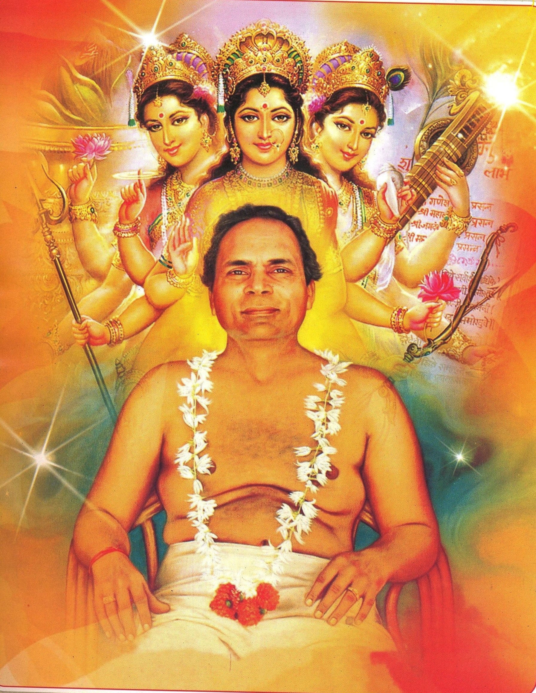

ज्ञान
ज्ञान केवल जानकारी नहीं, बल्कि ब्रह्माण्ड, विज्ञान, समाज, परिवार, शरीर और जीवन के विभिन्न पहलुओं को समझना है। यह अज्ञान का अंधकार दूर कर विवेक को जाग्रत करता है।
भैयाजी द्वारा प्रतिपादित यह साधना बुद्धि और विवेक को तराशकर, परिष्कृत और निर्मल बनाती है। यह भौतिक जीवन में रहते हुए भी व्यक्ति को सकारात्मक सोच, आत्म-विकास, प्रेम, शांति और आनंद की दिशा में सहज रूप से आगे बढ़ाती है।

मानव आदिकाल से ही आनंद, शांति, उत्साह और सुख की खोज में ज्ञान, भक्ति, निष्काम कर्म, योग, जप, तप, मंत्र और ध्यान जैसी विविध साधनाएँ अपनाता आया है। इतिहास साक्षी है कि वही साधना-पद्धतियाँ मानव कल्याण में प्रभावी सिद्ध हुईं, जो अपने समय की सोच, आवश्यकताओं और ज्ञान के अनुरूप थीं।
पिछली शताब्दी के 70 के दशक में सूचना-प्रौद्योगिकी के उदय ने बौद्धिक युग की नींव रखी। आज बुद्धि का निरंतर विकास भौतिक समृद्धि का आधार है और बुद्धि-विवेक पर आधारित सोच वर्तमान और भविष्य की प्रगति की नींव है। इसी दृष्टि से भैयाजी ने 1990 में चक्र उठाने के बाद भावी मानव सभ्यता में बुद्धि-विवेक के महत्व को समझते हुए इस साधना का प्रतिपादन किया।

बुद्धि-विवेक योग साधना में बुद्धि और विवेक को न केवल तराशा जाता है, बल्कि उन्हें निर्मल भी बनाया जाता है। इस साधना पद्धति में प्रशिक्षित व्यक्ति प्रेम, सुख, शांति और आनंद में रहते हैं तथा अपने सम्पर्क में आने वाले लोगों में भी इन गुणों को विकसित करते हैं।
आधुनिक विज्ञान ने जीवन को सुविधासम्पन्न बनाया है, फिर भी अशांति, तनाव और दिशाहीनता बढ़ी है। बच्चे, युवा और आध्यात्मिक रुचि रखने वाले अनेक लोग सरल और व्यावहारिक मार्ग की तलाश में हैं। मानव कल्याण हेतु भैयाजी ने भौतिक और चैतन्य दोनों प्रकार के जीवन को उन्नत करने के लिए अपने अनुभवों के आधार पर यह सरल सामयिक विधि प्रतिपादित की।
यह पद्धति अकेलापन, भय और तनाव से मुक्ति दिलाती है। विचारों में परिवर्तन होता है, देखने का दृष्टिकोण बदलता है, नकारात्मक सोच धीरे-धीरे सकारात्मक बनती है, एकाग्रता बढ़ती है और प्रेमानंद का उदय होने लगता है।

इस साधना की समग्रता को कमल के फूल के रूप में समझाया गया है: संसार में रहते हुए भी आसक्ति से मुक्त, कर्म करते हुए भी शांत, और प्रगति करते हुए भी भीतर से निर्मल।
व्यक्ति आवश्यकतानुसार भौतिक साधनों का उपयोग करते हुए भी अध्यात्म कर सकता है।
बुद्धि निर्मल और विवेक जागृत होने पर धन, कामना और कीर्ति के प्रति आसक्ति कम होती है।
भौतिक सफलता के साथ व्यक्ति प्रेम, शांति और स्थायी आनंद का अनुभव कर सकता है।
इस साधना में ज्ञान, विज्ञान और चिंतन के आधार पर संकल्प, समर्पण और सजग कर्म-साधना की ओर बढ़ना होता है।
ज्ञान केवल जानकारी नहीं, बल्कि ब्रह्माण्ड, विज्ञान, समाज, परिवार, शरीर और जीवन के विभिन्न पहलुओं को समझना है। यह अज्ञान का अंधकार दूर कर विवेक को जाग्रत करता है।
पूर्वाग्रह से मुक्त होकर जिज्ञासा, परीक्षण, विश्लेषण और तर्क के आधार पर सत्य की खोज करना। यह सत्य को परखने की क्षमता देता है।
ज्ञान और विज्ञान के आधार पर उद्देश्य, लाभ-हानि और विभिन्न पहलुओं पर गंभीर विचार। इससे शंका दूर होती है और लक्ष्य के प्रति दृढ़ निश्चय बनता है।
चिंतन के बाद निर्धारित लक्ष्य को प्राप्त करने का दृढ़ निश्चय। संकल्प में लक्ष्य की प्राप्ति के लिए कोई विकल्प नहीं होता।
अपने इष्ट के प्रति पूर्ण विश्वास और समर्पण। अपना अधिकार, स्वामित्व और दायित्व इष्ट को अर्पित कर उस पर पूर्ण निर्भरता स्वीकार करना।
विचारों को परिवर्तित करते हुए कर्म-साधना के पथ पर अग्रसर होना। बुद्धि निर्मल और विवेक जागृत होने पर कर्म प्रेम, आनंद और सहयोग की भावना से होता है।
सोपानों के परिपक्व अभ्यास से व्यक्ति के भीतर ईश्वर से निःस्वार्थ संबंध, समभाव और दिव्य आनंद का उदय होता है।
प्रेम ईश्वर का सच्चा स्वरूप है। इसका अर्थ है निःस्वार्थ भाव से ईश्वर और प्रत्येक प्राणी से संबंध बनाना। प्रेम के कारण जीवन में उल्लास आता है और भौतिक आकांक्षाओं का महत्व घटता है।
शांति वह अवस्था है जहाँ मनुष्य शारीरिक, मानसिक, भावनात्मक और आध्यात्मिक रूप से उद्वेलित नहीं होता। वह समभाव में जीना सीखता है और आसक्ति रहित जीवन की ओर बढ़ता है।
प्रेम के उदय से व्यक्ति ईश्वर से तारतम्य स्थापित कर निरंतर आनंद में स्थित होने लगता है। यह शब्दों से परे दिव्य अनुभूति है, साधना की चरम अवस्था।

इन सिद्धान्तों का उद्गम स्थल सिद्धपीठ है। यहाँ शारदाजी ने साधना कर माँ त्रिपुरसुन्दरी से ज्ञान और मार्गदर्शन प्राप्त किया। यह वह पवित्र स्थल है जहाँ भैयाजी की साधना की दिव्य ऊर्जा आज भी पूर्ण रूप से विद्यमान है।
सिद्धपीठ में की गई साधना शीघ्र फलदायी मानी जाती है। यही बात मणिद्वीप पर भी लागू होती है। भैयाजी प्रदत्त बुद्धि-विवेक योग साधना द्वारा व्यक्ति हर जगह, हर समय, हर परिस्थिति में, भौतिक कार्य करते हुए भी सरलता से साधना कर सकता है।
“बुद्धि-विवेक योग साधना से स्वयं व औरों को भौतिक उन्नति के साथ अमरत्व की ओर बढ़ावें।”
बुद्धि-विवेक योग साधना एक मिशन और जीवन जीने की सरल, युगानुकूल शैली है। यह व्यक्ति को स्वयं उन्नत करने के साथ परिवार, सहकर्मियों और समाज में भी सकारात्मक ऊर्जा, उत्साह और आनंद का संचार करती है।